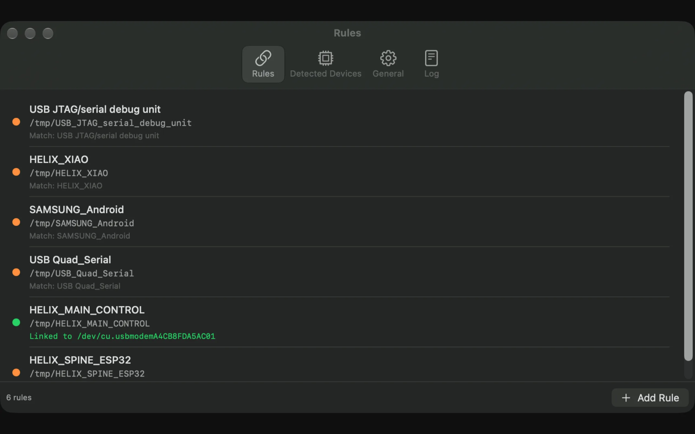
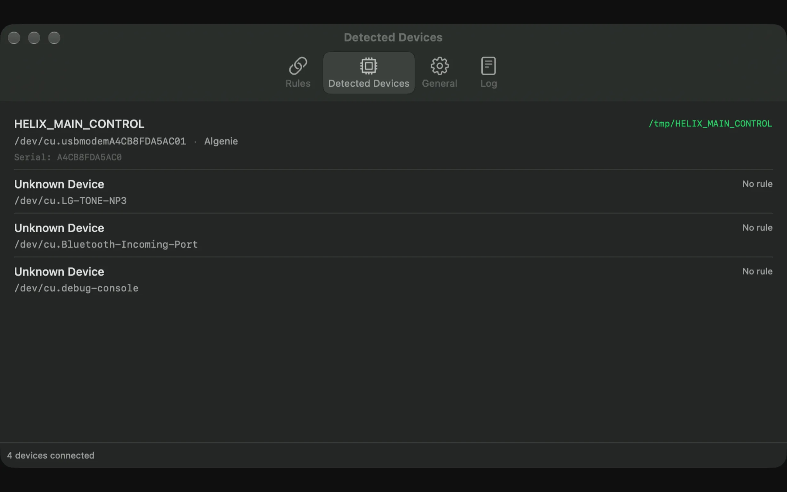
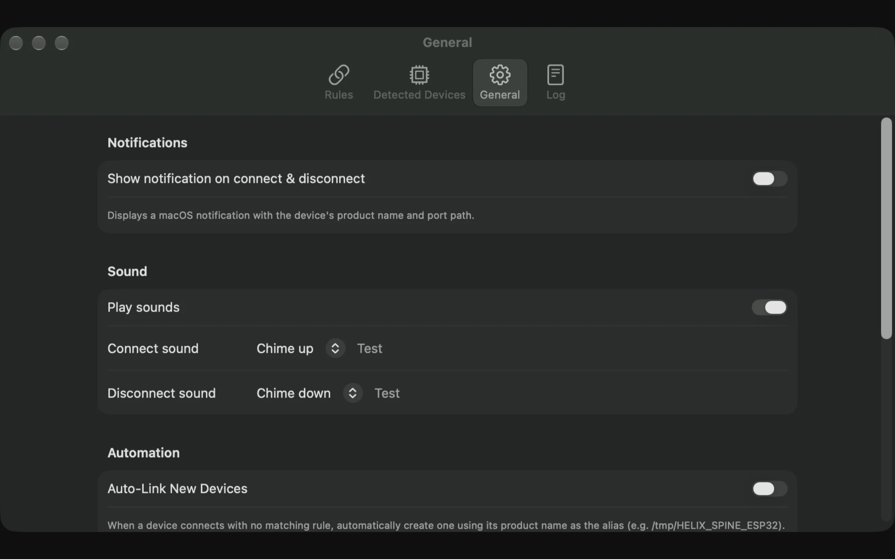

Plug the board in
Choose it from the detected devices list. USBAlias captures its product, manufacturer and serial number.
Available now on the Mac App Store
USBAlias gives every board, radio and test rig a stable name on macOS. Match the device once, then use the same path in your terminal, scripts and firmware tools.
macOS 26.5 or later A$19.99 one-time purchase No subscription
/dev/cu.usbmodemA4C8F...
~/Aliases/ESP32_LAB

The path problem
A device can return as /dev/cu.usbmodem101 one minute and something completely different the next. Cold starts, hubs, multiple boards and reconnects all shuffle the names.
Without USBAlias
/dev/cu.usbmodemA4C8F1/dev/cu.usbmodem101/dev/cu.usbmodem1101broken port, againWith USBAlias
~/Aliases/ESP32_LAB~/Aliases/ESP32_LAB~/Aliases/RP2040_BENCHsame path, every timeMatch once. Use anywhere.
USBAlias watches your serial devices and maintains the symbolic link while it runs. There is no daemon to configure and no change to your existing firmware tooling.
Choose it from the detected devices list. USBAlias captures its product, manufacturer and serial number.
Use a serial number for an exact match, or product and manufacturer when one alias should catch a class of boards.
Point the IDE, CLI or test harness at the alias. USBAlias repairs the link whenever the device comes back.
Made for real hardware work
Serial ports are infrastructure. They should stay stable while you focus on the firmware, test or experiment in front of you.
Firmware and flash tools
Use the alias directly with ESP32, Arduino, RP2040 or custom flashing scripts. The board can be unplugged, reconnected or moved to another hub without changing the target path.
$ esptool.py --port ~/Aliases/ESP32_LAB chip_id $ arduino-cli upload -p ~/Aliases/ESP32_LAB . $ ./flash-bench.sh ~/Aliases/RP2040_BENCH

Serial consoles
Skip the port scan before every screen, picocom or monitor command. Give each radio, development board or controller a name that matches what is actually on your bench.
$ screen ~/Aliases/RADIO_BENCH 115200 $ picocom -b 921600 ~/Aliases/FLIGHT_LOG $ python monitor.py ~/Aliases/SENSOR_RIG

Multi-board test benches
Match on serial number so two identical development boards keep different aliases. When one disconnects, the others stay correct.
USBAlias shows the linked Mac port in the popup and list, so the current hardware path is always visible without opening Terminal.
Small app. Useful details.
The useful parts are visible from the menu bar. The rest stays out of your way.
Product, manufacturer and serial number are all available for matching, with serial as the precise option.
Keep a clean set of stable links in a folder you choose, ready for every tool that accepts a device path.
Watch for new serial devices and create a rule from the product name when one appears.
See each alias, its state and the current linked Mac port without opening the main window.
Copy the alias or current hardware path directly from the app when a tool asks for one.
Optional notifications and connect or disconnect sounds show the device name and linked port.
A live activity log records connections, matches, link creation and the port behind each change.
No sign-in and no tracking. Optional anonymous diagnostics are explained at first launch.
USBAlias does not need an account and does not open, read or write the serial device. Anonymous diagnostics are optional, clearly explained, and off unless you explicitly choose to share.
Available now
One small Mac App Store purchase for every board, cable and test rig in your workflow. No subscription, no account and no server configuration.
One-time purchase. Australian storefront price shown; other regions may vary.
View on the Mac App StoreBefore you buy
More setup and troubleshooting help is available on the support page.
No. It asks macOS which serial devices are attached and creates a symbolic link to the current device path. It does not read or write the serial data itself.
USBAlias matches the newly connected device against your rules and updates its alias to point at the new /dev/cu.* path. Your tools keep using the same alias.
Yes. Match on serial number when two devices share the same product and manufacturer. That keeps each identical board attached to its own alias.
In the aliases folder you choose. The App Store version is sandboxed, so it maintains those links inside a folder you grant it access to rather than writing to /tmp.
No. USBAlias is a one-time Mac App Store purchase. The Australian storefront price is A$19.99; pricing in other regions is set by Apple's storefront pricing.